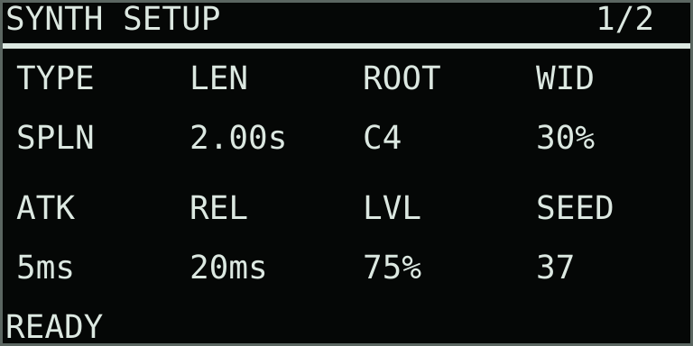
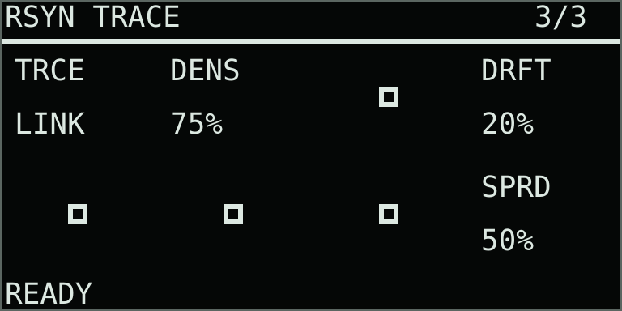
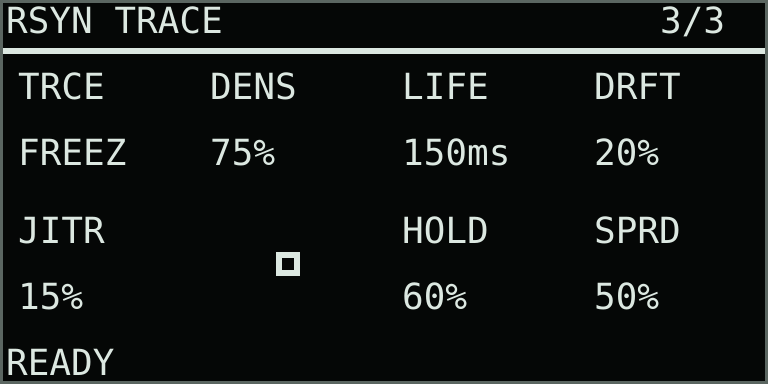
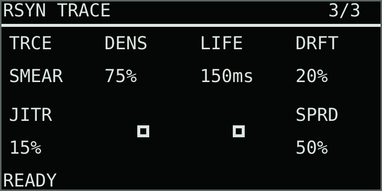
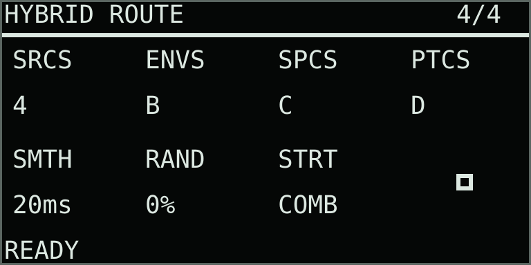
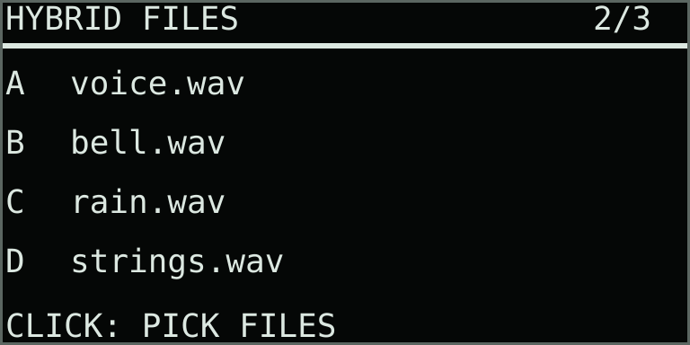
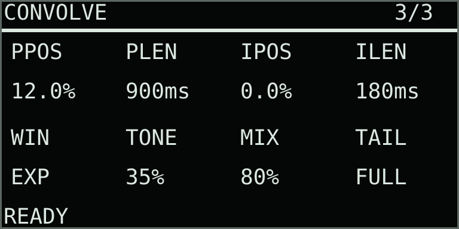

Sample creation
Process
Transform saved recordings into new stereo samples with Resynth, Hybrid and Convolve. Set the controls, render when ready, audition the result, then save or load it into a lane. Processing runs in the background and leaves the original sources intact.
Process a sample
- Open Capture + Menu → Sample → Process.
- Choose TYPE: RSYN, HYBR or CONV. Select the required source files from the main-encoder Actions menu.
- Set the source regions and processing controls. Parameter changes edit the draft without interrupting the last rendered preview.
- Tap Capture to render, then Loop to audition. Play retains its clip transport role.
- Track buttons choose the destination lane. Press Record to save and load, or Shift + Record to save without loading.
Process remembers the last type, page, sources and settings. Leave Process before recording audio or a performance clip. The realtime engines provide keyboard-playable synthesis, including PARTIALS for additive, subharmonic and packet sounds.
Navigation

| Group | What it controls |
|---|---|
| SOUND | Type, file setup, source files and processing parameters. |
| MOTION | Offline modulation, curves and bounded randomization. Squares mark unavailable targets. |
| OUTPUT | Last rendered waveform, status, name and destination. |
| ACTIONS | Click the main encoder for Render, Preview, source selection, Name, Save, Save & Load and Open Source Recipe. |
Menu opens this group overview. Back returns to it; a second Back closes the tool. Capture + Menu returns to Thru’s page overview. No parameter or source edit starts a render automatically.
Process Setup

| Knob | Display | What it controls |
|---|---|---|
| 1 | TYPE | RSYN, HYBR or CONV. |
| 2 | LEN / MAX | Output duration, 0.04–12 seconds. Convolve uses MAX to limit the natural result and tail. |
| 3 | ROOT | Keyboard pitch reference written into the saved WAV. |
| 4 | WID | Output stereo width; zero is mono. |
| 5 | ATK | File attack, 0–2000 ms. Unavailable for LOOP. |
| 6 | REL | File release, 0–4000 ms. Unavailable for LOOP. |
| 7 | LVL | Saved peak level; 100% peaks at −1 dBFS. |
| 8 | SEED | Repeatable random identity, 0–65535, when the selected process uses randomness. |
Resynth
Resynth rebuilds a saved lane sample. PVOC retains the broader spectrum and supports pitch-independent stretching. SINE rebuilds the strongest tracked partials; it emphasizes pitched content and does not reproduce noise or attacks as faithfully.
- Load or record a sample into a lane. Wait for its save to finish.
- Choose RSYN with TYPE. Press the Track key for the source lane.
- Click the main encoder and select Use Lane as Source.
- Set the source window and processing. LEN on Setup sets the output duration independently of TUNE.
- Tap Capture to render, then Loop to audition. Choose Save, or select a destination with Track and choose Save & Load.
Once selected, the source stays fixed while other lanes are selected for saving. Choose Use Lane as Source again to replace it. The original file is preserved. Sources use the first twelve seconds and are converted to Move's sample rate when needed.

| Knob | Display | What it controls |
|---|---|---|
| 1 | MODE | PVOC spectral resynthesis or SINE partial tracking. |
| 2 | TUNE | Pitch shift, −24 to +24 semitones. Changing LEN does not change this pitch setting. |
| 3 | STRT | Start of the input window, as a percentage of the captured source. |
| 4 | END | End of the input window. STRT and END remain at least 1% apart. |
| 5 | BLUR | Spread spectral detail across neighboring frequencies. |
| 6 | SMTH | Slow changes of spectral level over time. |
| 7 | PART | Maximum tracked partial count, 4–64. Available in SINE. |
| 8 | FLOR | Spectral floor, −96 to −6 dB relative to the frame peak. Higher settings discard more quiet detail. |
The curve rows are Pitch / Blur / Smooth / Level. ROOT is the pitch reference written into the resulting WAV; TUNE changes the sound. WID begins at 100% for a new Resynth workspace to preserve stereo; zero sums the channels to mono.
A saved Resynth WAV embeds its original input as well as its recipe. Open Source Recipe can therefore reconstruct the result after the original file has been removed or the project has been imported elsewhere. These WAVs can be larger than other generated files.
RSYN Trace
Choose SINE on Resynth to reveal the Trace page in Sound. LINK follows changing partials continuously. POINT makes separate windowed partial events; SMEAR overlaps longer versions of them; FREEZ repeatedly draws from the analysis position selected by HOLD. The Resynth source window, tuning, floor, blur and smoothing still apply.


| Knob | Display | What it controls |
|---|---|---|
| 1 | TRCE | Behaviour: LINK, POINT, SMEAR or FREEZ. |
| 2 | DENS | Proportion of admitted partial traces, 0–100%. Zero makes a silent render. |
| 3 | LIFE | Base partial-event length, 10–2000 ms. SMEAR lengthens it by 2.8×; FREEZ by 7.5×. LEN bounds the saved result. Unavailable in LINK. |
| 4 | DRFT | Smooth pitch drift within traces. |
| 5 | JITR | Partial-event timing variation. Unavailable in LINK. |
| 6 | TOL | Linked-track matching tolerance, 10–600 cents. Available only in LINK. |
| 7 | HOLD | Analysis position inside the selected source window, 0–100%. Available only in FREEZ. |
| 8 | SPRD | Additional seeded placement of partials across stereo, scaled by WID. Unavailable at WID zero. |


These are offline treatments: set the controls, then tap Capture to render a new preview. A saved Resynth WAV includes its source, so its trace behaviour can be recalled later.
Hybrid
Keep the material of source A while borrowing selected characteristics from other recordings. For example, shape strings with a drum loop’s rhythm, colour a sustained tone with speech, or make a resonant recording follow a melody. Hybrid transforms the full spectrum with overlapping windows and keeps the source’s stereo relationship.
- Choose HYBR. Open Hybrid Route and choose SRCS: two inputs normally suffice.
- Click the main encoder and choose Pick Source A and Pick Source B. Pick C/D when using additional donors. Selecting a file returns to Hybrid Files and leaves lane samples unchanged.
- On Hybrid Route, use STRT to choose RHYTH, COLR, PITCH or COMB, then adjust the eight Hybrid controls. B supplies all traits initially; ENVS/SPCS/PTCS can assign them separately.
- Tap Capture to render. Loop auditions the last completed render; adjusting controls does not interrupt it or start another render.
- Name the result and select a lane. Record saves and loads; Shift + Record saves only.



Hybrid controls
| Knob | Display | What it controls |
|---|---|---|
| 1 | ENV | Envelope transfer: apply the donor’s changing loudness and rhythmic articulation to source A, 0–100%. |
| 2 | SPEC | Spectral colour transfer: reshape A with the donor’s broad frequency envelope, 0–100%. A’s stereo relationship is retained. |
| 3 | PTCH | Pitch contour transfer: move A toward the donor’s detected pitch, 0–100%. Best with clear single-note sources around 55–1500 Hz; unpitched or uncertain frames return toward A’s pitch. |
| 4 | ALGN | Donor alignment: FIT stretches donor timing across LEN; TIME follows elapsed time (its envelope becomes silent beyond its end; colour and pitch return to neutral); LOOP repeats the donor timeline. A spans LEN in all three. |
| 5 | OFFS | Donor timing offset, −10 to +10 seconds. Positive values read later in the donor; LOOP wraps either sign. |
| 6 | ATK | Preserve A’s detected attacks, 0–100%. Higher values let A’s original transient through the transfer, including during gaps in the donor. |
| 7 | NOIS | Retained residual detail, 0–100%. Full keeps A’s complete spectrum, including unpitched texture; reducing it favours prominent tonal components. |
| 8 | TUNE | Overall tuning after pitch transfer, −24 to +24 semitones. |
Hybrid Route
| Knob | Display | What it controls |
|---|---|---|
| 1 | SRCS | Required inputs, 2–4. A is always the material being transformed. All required files must be selected. |
| 2 | ENVS | Envelope donor: B, C or D, limited by SRCS. |
| 3 | SPCS | Spectral colour donor: B, C or D. |
| 4 | PTCS | Pitch donor: B, C or D. |
| 5 | SMTH | Smooth envelope and pitch transfer over 5–200 ms. Lower values follow articulation more closely. |
| 6 | RAND | Optional smooth pitch variation. Zero adds no extra random variation. |
| 7 | STRT | Starting transfer amounts: RHYTH uses envelope, COLR spectral colour, PITCH pitch contour, COMB all three. Changing one of these amounts shows CUST. Routing and output settings stay as set. |
For an unchanged starting point, set ENV, SPEC and PTCH to zero, NOIS to 100%, TUNE and RAND to zero, and keep the motion curves neutral. Set LEN to A’s duration and WID to 100% to retain its timing and stereo image. The common output envelope, level and normalization still apply. A new Hybrid workspace begins with a rhythm transfer and full stereo width.
The curve rows are Pitch / Envelope / Colour / Level. Pitch adds semitones to TUNE; Envelope and Colour add to their transfer amounts. Clear a curve or turn its modulation amount down when comparing base settings.
Saved Hybrid WAVs embed every required source. Open Source Recipe and project export/import therefore work after the original files are removed. Existing Hybrid recipes retain their older MODE/DENS/MUT/TEXT controls and sound. Choose Upgrade Hybrid in Actions to use the new transfer controls on a copy of the workspace; render and save a new file to keep that version. The original WAV stays intact.
Convolution
CONV combines a primary recording with an impulse recording to make a new stereo sample. The impulse can be a room response, a short attack, a resonant object, another musical sample or the same file as the primary. Processing happens in the background.
- Select CONV, then open the Convolution Files page in Sound.
- Click the main encoder and choose Pick Primary. Browse the usual sample sources and click a WAV to select it.
- Choose Pick Impulse the same way. Choosing either input leaves the audio lanes unchanged. Menu cancels the picker.
- Set the two regions, impulse window and processing on Convolve. Tap Capture to render, then Loop to audition the result.
- Choose the destination lane with Track 1–4, then press Record to save and load the result.
Each file selection returns to Process and shows the chosen filename on Convolve Files. Once both files are selected, tap Capture when you are ready to render. Loop auditions the completed result.


| Knob | Display | What it controls |
|---|---|---|
| 1 | PPOS | Start position in the primary file, 0–99.99%. |
| 2 | PLEN | Primary region length, 1–12000 ms, or the remaining audio if shorter. |
| 3 | IPOS | Start position in the impulse file, 0–99.99%. |
| 4 | ILEN | Impulse region length, 0.05–12000 ms. The first starting point uses up to one second. |
| 5 | WIN | Impulse envelope: FLAT leaves it unchanged, TRI and HANN taper both ends, EXP emphasizes the beginning and decays to the end. |
| 6 | TONE | Impulse brightness. Positive values emphasize changes and high frequencies; negative values soften the impulse. |
| 7 | MIX | Blend primary audio with the convolved result. The wet signal is peak-matched before blending; LVL sets the final peak. |
| 8 | TAIL | FULL keeps the convolution tail up to MAX. TRIM ends at the primary region length, also limited by MAX. |
Each source uses its first twelve seconds and is converted to Move's sample rate when needed. MAX on Setup defaults to 12 seconds, matching a Thru lane's capacity. Output shows the completed duration. LOOP uses a short overlapping seam and slightly shortens the result.
Stereo processing pairs primary left with impulse left, and primary right with impulse right. A mono file feeds both channels. WID applies to the whole dry/wet result; zero produces mono. Only the Level curve and Level modulation apply to Convolution.
Saved convolution WAVs include both captured inputs and the recipe. Open Source Recipe rebuilds the result without the original files. Project export preserves these embedded inputs when the saved WAV is assigned to a lane. The source files are preserved.
Modulation and curves
Motion shapes the rendered file, independently of the playing instrument’s LFOs. Resynth’s rows are Pitch / Blur / Smooth / Level. Hybrid uses Pitch / Envelope / Colour / Level. Convolve uses only Level. Unavailable curve rows and modulation targets show squares.
Each pad selects one of eight points in a curve row. The encoders edit its time, value and outgoing shape. Copy + pad copies a point, Shift + pad pastes, and Delete/X + pad clears it. Navigation does not change the sound until a value is edited and you render again.

Randomization
Shift + Loop randomizes unprotected controls and requests a render. The Random page sets its amount and bounds. Protected controls stay fixed; zero amount makes no change. The Actions menu also provides mutation and Clean.
Save and recall
Record saves the completed render and loads it into the selected lane. Shift + Record saves only. Click the main encoder and choose Name to customize the filename before saving. The existing output folder remains Samples/s3g Thru/Synths, preserving access to previous files; the library shortcut is named Thru Process.
Processed WAVs embed their recipe and source material, so Open Source Recipe and project backup can restore the process after original source files are removed. Old synthesis WAVs still play normally. Compatible recipes for methods moved to realtime engines load their base settings into those engines; original recipe data remains readable.